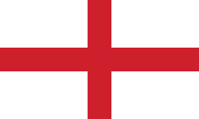

 Bobby CHARLTON - 1966
- Bobby Charlton remporte le Ballon d'or en 1966 à l’âge de 29 ans
Milieu de terrain offensif et considéré comme l'un des meilleurs joueurs anglais toutes générations confondues.
Nationalité : Anglaise
Né le : 11 octobre 1937, à Ashington (ANG)
Taille : 1,74
Poids : 72 kg
Poste : milieu
Clubs : Manchester United (1956-1973), Preston North End (1973-1975) et Waterford (1976)
Palmarès de joueur : Coupe du monde 1966 ; Coupe des champions 1968 ; Championnat d'Angleterre 1957, 1965 et 1967 ; Coupe d'Angleterre 1963
Bilan en club : 807 matchs, 260 buts
Bilan en équipe nationale : 106 sélections A, 49 buts (1958-1970
Bilan en phase finale de Coupe du monde : : 3 participations (1er en 1966), 14 matches, 4 buts (1962-1970)
Palmarès Ballon d'Or : vainqueur en 1966 et (2e en 1967 et 1968)
Classement du Ballon d’Or France Football 1966 :
Bobby Charlton (Angleterre / Manchester United),
81 pts.
Eusébio da Silva Ferreira (Portugal / Benfica),
80 pts.
Franz Beckenbaeur (RFA / Bayern Munich),
59 pts.
Retour à l'accueil